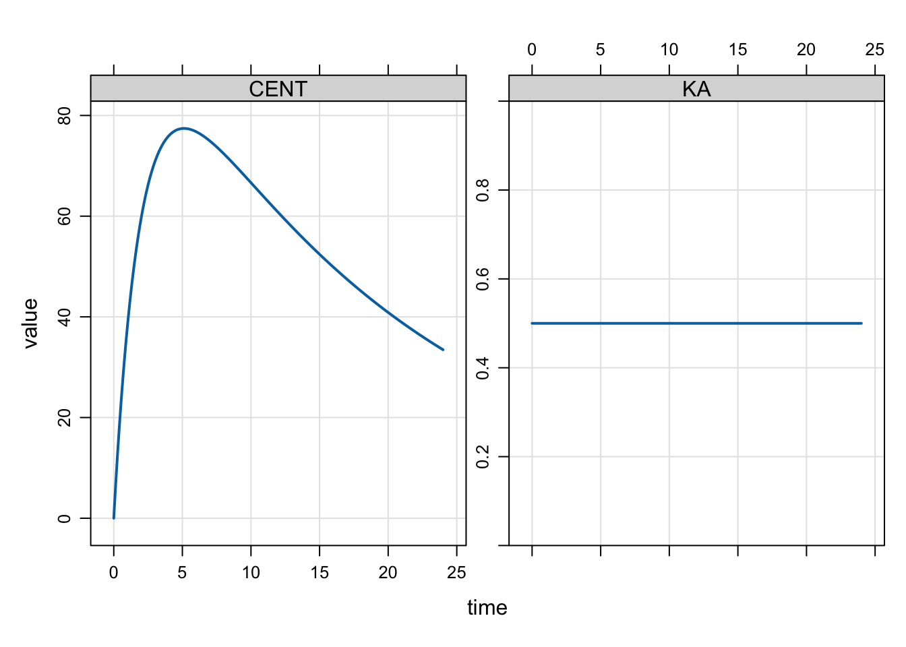
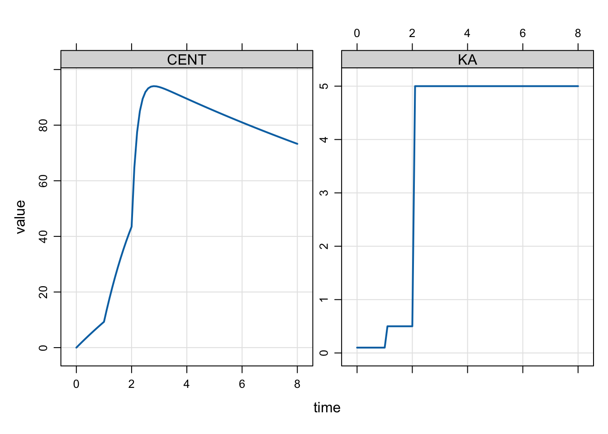
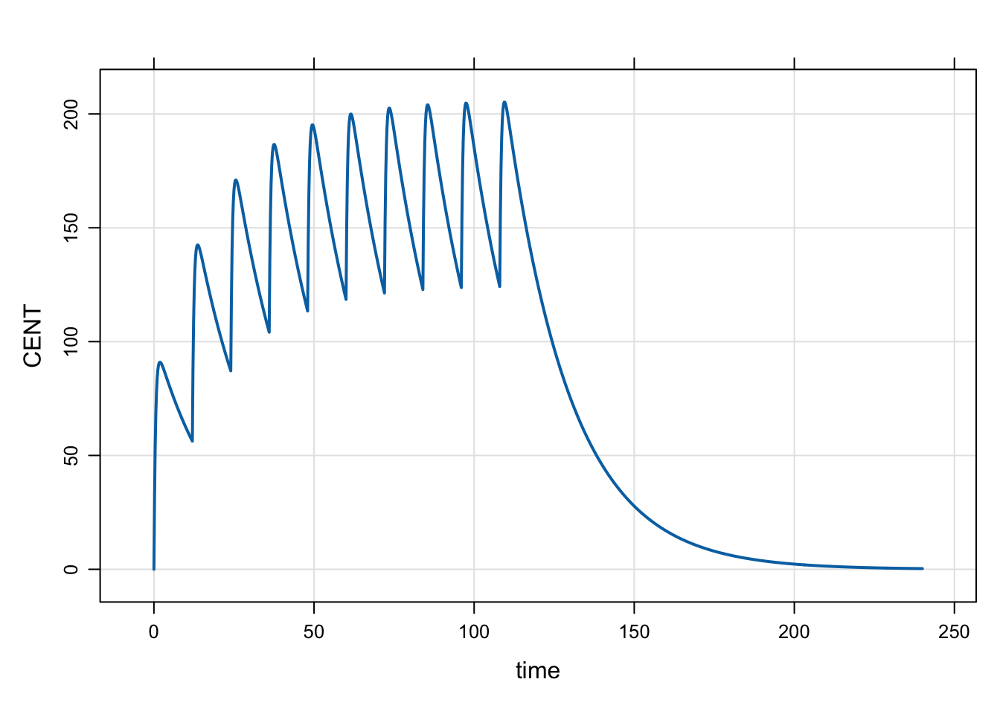

1 Introduction
This post is to introduce modeled interventions in mrgsolve. The main use case is to force mrgsolve to advance the system to a specific time so that some aspect of the system can change at that time. This is similar to the MTIME functionality that NONMEM provides. Doses (bolus or infusions) can also be implemented as a modeled event. These events are “modeled” because they originate from code in the $MAIN block, not the input data set, so that the events can be reactive to model parameters or the state of the model itself.
2 Status
At the time of this post, this functionality is only in a development branch on the mrgsolve GitHub. But we’ve been working on and revising this concept for a while now, so hopefully it is more or less stable with a reasonable interface. That said, specifics or syntax may change before this gets rolled out to CRAN.
3 Example: time-varying KA
One common use case for modeled events are a time-varying model parameter such as an absorption rate constant. The model with constant KA looks like this
library(mrgsolve)
mcode_cache("mevent0", code) %>%
ev(amt = 100) %>%
mrgsim(end = 24, delta = 0.1) %>%
plot(CENT+KA~time)
For the model with time-varying parameter, we want KA to start with a lower value at the time of the oral dose and then increase at some time after the dose. And we want that to happen for every dose. We model the time after the dose when we want KA to change and force the simulation to stop at that time so we can make the required changes.
The model with time-varying KA might look like this
The arguments for self.mevent() in this case are:
- time
- evid
Whenever we see a dose (EVID==1), we set KA to the initial (slower) KA value and register a model event that in this case happens two hours later. We use EVID=33 for that change point event. This is a arbitrary choice for EVID (it could be [almost] anything). The idea here is that, when we see EVID==33 come along, we change the KA to the faster value.
We don’t have plans to offer indicators like MPAST or MTDIFF as NONMEM does. But we can achieve similar behavior by tagging the event and then looking for that tag again down the road.
The simulation looks like this
Building mevent ... done.We can refine this even more with an additional intervention time for an intermediate value so that KA changes twice as the dose is absorbed
We use a separate EVID (34) here to distinguish the second change from the first change (with EVID 33).
Building mevent2 ... done.
Now we have the two change points implemented.
Multiple doses would look like this

And we can model this so that the change point is a function of a model parameter
4 Example: modeled dosing events
In the previous example, we used the mevent call to to force the simulation to stop at the time we wanted a model parameter to change. This was accomplished by an event object with EVID=2, which forces the solver to stop, reset, and then keep going with the new model parameters.
We can also use this event mechanism to implement actual doses. Now at the change point, we add some mass to one of the compartments. An example model for q12 hour dosing might look like:
Building mevent4 ... done.
So here, we simulated without the data set and implemented the dosing from within the model. This isn’t the way you should be implementing dosing like this on a regular basis, but it shows how you can trigger doses from within the model based on what has gone on up to that point in the simulation.